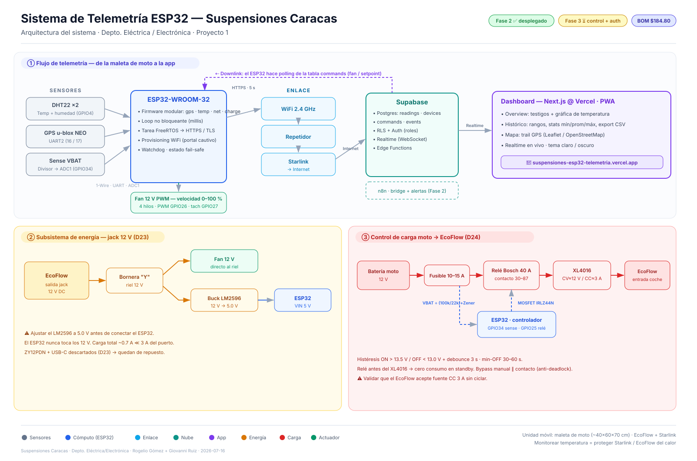

2 fans de 12 V · ~2.7 A c/u, 4 hilos, con driver interno. El ESP32 les manda velocidad por el hilo azul (PWM 25 kHz). El reto: el conector DC 2.1 mm aguanta 5 A y dos fans a tope suman 5.4 A → se limita el duty por firmware para no calentar el conector. Decidido en D26.
1 · Presupuesto de corriente en el conector 2.1 mm (5 A máx)
La corriente que calienta el conector = 2 fans + ESP32. El ESP32 en el lado 12 V ≈ 0.5 A×5V ÷ 12V ÷ 0.85 ≈ 0.3 A (casi nada). Los fans se escalan con el PWM:
| Tope PWM | 2 fans (peor caso lineal) | + ESP32 | Total conector | Veredicto |
|---|---|---|---|---|
| 100% | 2×2.7 = 5.4 A | 0.3 A | 5.7 A | ❌ excede 5 A |
| 85% | 4.6 A | 0.3 A | 4.9 A | ⚠ al filo |
| 75% | 4.05 A | 0.3 A | 4.35 A | ✅ con margen |
| 70% (recom.) | 3.8 A | 0.3 A | 4.1 A | ✅ conector frío |
FAN_MAX_DUTY = 70;
se mide y se ajusta. A 70% el flujo de aire de estos fans grandes sigue siendo de sobra.
2 · Diagrama de conexión (2 fans en paralelo)
3 · Pin por pin — cada hilo, a dónde y cómo
| Desde | Hilo / pin | Hasta | Cómo / nota |
|---|---|---|---|
| Tronco de potencia | |||
| EcoFlow jack (+) | — | Conector 2.1 mm macho (+) | plug DC ya comprado · aguanta 5 A |
| Conector (+) | — | Nodo +12V (bornera) | punto donde se mide la corriente total |
| EcoFlow jack (−) | — | Nodo GND (bornera) | tierra única de todo |
| Buck OUT | 5 V | ESP32 VIN | ⚠ ajustar buck a 5.0 V antes de conectar |
| Fan A (4 hilos) | |||
| Fan A | rojo · +12V | Nodo +12V | en paralelo con Fan B |
| Fan A | negro · GND | Nodo GND | — |
| Fan A | azul · PWM | ESP32 GPIO26 | junto con el azul de Fan B (mismo pin) |
| Fan A | amarillo · tach | ESP32 GPIO27 | + resistencia 10 kΩ a 3.3 V (pull-up) |
| Fan B (4 hilos) | |||
| Fan B | rojo · +12V | Nodo +12V | en paralelo con Fan A |
| Fan B | negro · GND | Nodo GND | — |
| Fan B | azul · PWM | ESP32 GPIO26 | mismo pin que Fan A → misma velocidad |
| Fan B | amarillo · tach | — sin conectar | aíslalo con termo; 2º tach = pin futuro |
GPIO26 mueve los dos fans? La entrada PWM es de alta impedancia
(solo señal, μA): un pin empuja las dos sin problema y ambos giran al mismo duty. El tach sí es 1 por fan
→ se lee solo el de Fan A (ambos corren igual, si querés los dos hace falta un 2º pin).
4 · Cómo asegurarte de que va bajo 5 A
FAN_MAX_DUTY y reflashea; si sobra margen, súbelo. Cada cambio → re-mide.FAN_SLEW_PER_TICK) → los dos fans no golpean el conector de golpe al encender.5 · Control (firmware)
FAN_MAX_DUTY = 70%: ningún camino lo supera, ni el fail-safe → el conector nunca ve más de ~4 A.temp ≤ TEMP_OFF → 0%; ≥ TEMP_ON → 70% (tope); en medio, rampa desde FAN_MIN_DUTY (30%).FAN_SLEW_PER_TICK = 20%/s: sube/baja suave (0→70% en ~4 s), evita el inrush.FAN_ON=tope / FAN_OFF=0 / FAN_AUTO=rampa. Fail-safe: DHT22 caído → tope.firmware.ino · applyFanControl() · config.h
{kind=link}